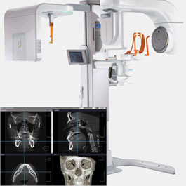

Tại sao bạn nên chọn cắt mí tại BVTM Đông á
Sở hữu đôi mắt đẹp quyến rũ

Công nghệ Hàn quốc hiện đại nhất 2020
Quy trình thực hiện khoa học, an toàn, đúng chỉ định của Bộ Y tế
Đội ngũ bác sĩ trình độ chuyên môn cao, nhiều kinh nghiệm
Nhân viên tư vấn chăm sóc tận tình